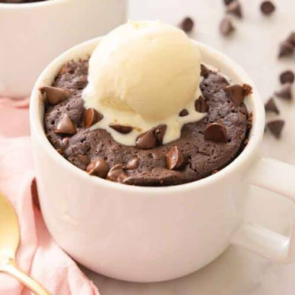

Mug CakeMug cakes have always been my go to when it came to quick and easy baking.
College life can be stressful, but there's nothing quite like a warm, freshly baked cookie to lift your spirits. Whether you're studying for exams or just need a quick pick-me-up, these recipes are perfect for any cozy day on campus.


Mug CakeMug cakes have always been my go to when it came to quick and easy baking.
 Cinnamon Rolls
Cinnamon Rolls
Cinnamon rolls are the perfect treat to make when you have a little more time to bake. They are great for breakfast or a sweet snack.